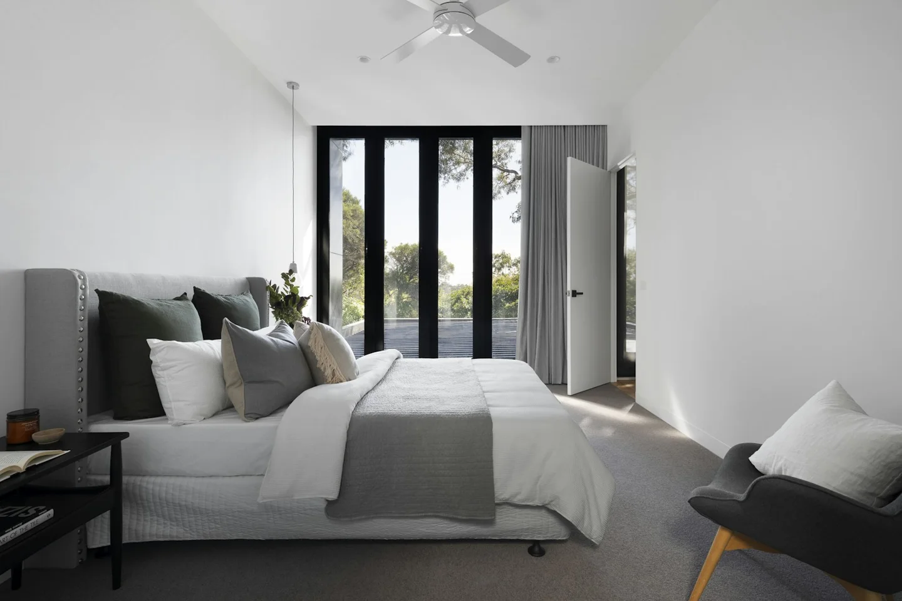

← جميع الدراساتالأرشيف / دراسة 03—06
دراسة مخططات / موقع
مخطط الموقع
دراسة لموقع افتراضي لمسكن الفناء: حدود الأرض، مساحة البناء، التراجعات، المحاور، المداخل وتوزيع المساحات المفتوحة. الأبعاد هنا نموذجية وليست مسحاً ميدانياً.
محتوى اللوحةحدود الأرض · المحاور · التراجعات · المداخل
هذه رسومات توضيحية لمشروع تصوّري. الصور المرافقة مجرد مراجع للأجواء والخامات، وما بتوثّق مشروعاً منفّذاً.
TECHNICAL STUDY / A—001 / SITE PLAN
مخطط الموقع بالتفصيل
موقع افتراضي للدراسة فقط، وليس خريطة مساحية أو مخططاً معتمداً.
جاري عرض اللوحة التجريبية
A—001 / SITE PLAN / معاينة فقط


